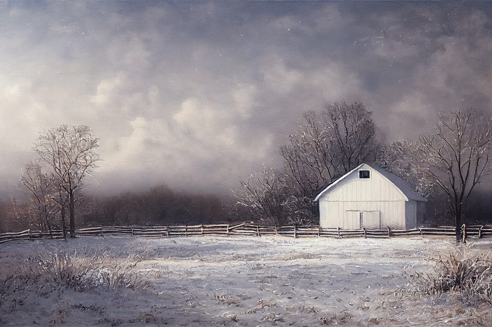
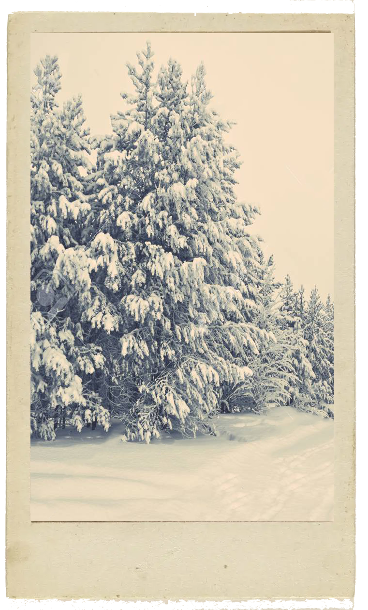

Celebrates the peasant, with songs and dances,
The pleasure of a bountiful harvest.
And fired up by Bacchus's liquor,
many end their revelry in sleep.

Allegro molto
Each peasant ceases his dance and song.
The mild air gives pleasure, and the season invites
Many to enjoy a sweet slumber.

Allegro
The hunters emerge at the new dawn,
And with horns and dogs and guns depart upon their hunting
The beast flees and they follow its trail;
Terrified and tired of the great noise
Of guns and dogs, the beast, wounded, threatens
Languidly to flee, but harried, dies.